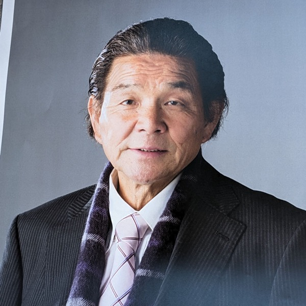
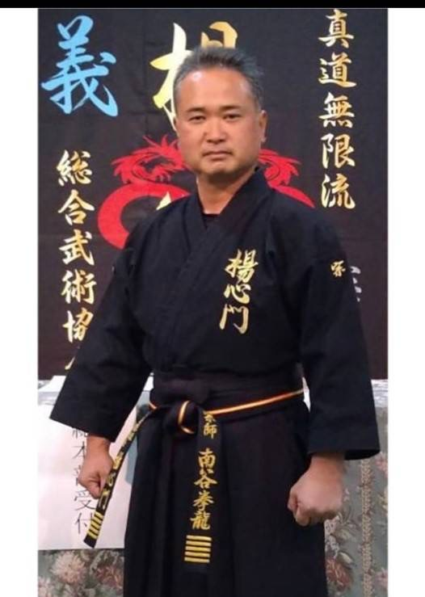
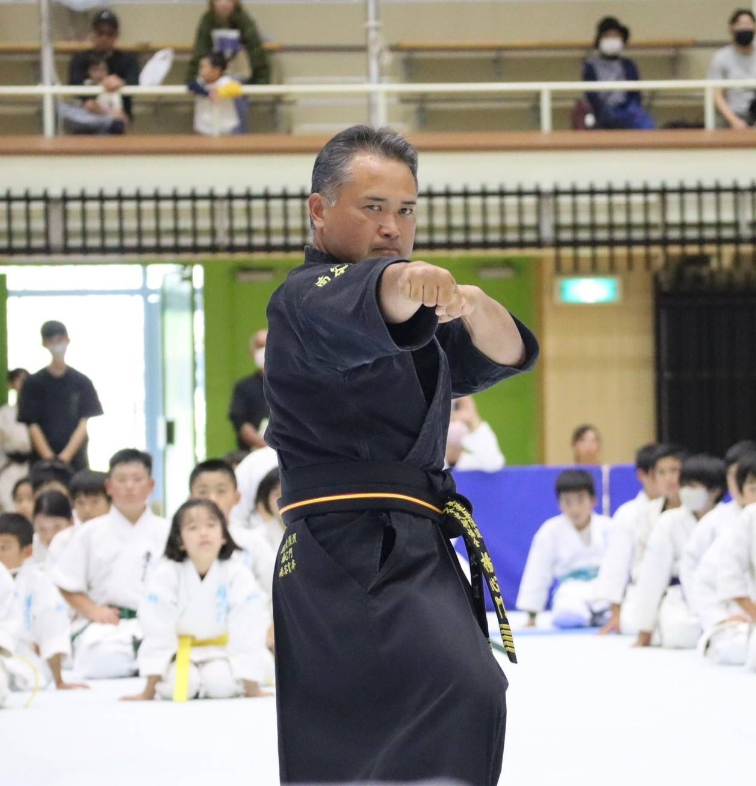
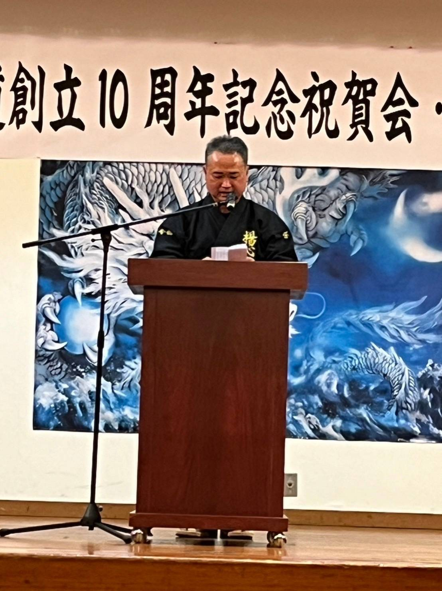

真道無限流 楊心門の礎を築いた二人の武道家
十段範士・防具付全日本空手道連盟副会長

鹿児島県鹿屋市にて誕生
古典新道流空手道 入門
少林寺流空手道錬心舘 入門
第3回全国空手道大会 一般重量級 第3位
錬心舘 大隅地区本部長 就任
フィリピン ダバオ本部長 就任
鹿屋市体育功労者表彰 受賞
鹿児島県体育功労者表彰 受賞
真道無限流 楊心門 総合武術協会 開設。宗師 十段範士を一門全師範にて推挙。
楊心門 全集を完成
逝去
真道無限流 楊心門は、
「大家族主義」を旨とし、「義」を象徴（精神）とする
— 辞世の言葉
十段範士・防具付鹿児島県空手道連盟会長




南大隅町根占に誕生
少林寺流空手道錬心舘 根占支部に入門（開祖 枦山創師との出会い）
鹿児島県大会 高校形・組手 優勝（2連覇）
全国空手道大会（鹿児島）一般軽量級組手 優勝（1回目）。鹿児島県優秀スポーツ選手賞 受賞。
全国空手道大会（広島県）一般軽量級組手 優勝（2回目）・総合優勝
全国空手道大会（大阪府）一般形 優勝。鹿児島県優秀スポーツ選手賞 受賞（2回目）。
全国空手道大会（宮崎県）一般軽量級組手 優勝（3回目）・最優秀選手賞（MVP）
全国空手道大会（北海道）一般軽量級組手 優勝（4回目）。鹿児島県優秀スポーツ選手賞 受賞（3回目）。
第1回国際親善空手道大会（鹿児島県）にて現役引退
開祖 枦山拳龍創師・各師範とともに楊心門空手道を創設。錦江支部を開設。
開祖逝去により楊心門空手道理事会満場一致にて第二代宗師十段範士に推挙。 鹿児島県硬式空手道連盟 会長に就任。大姶良支部・霧島地区本部を開設。 楊心門空手道 総本山を開山。創立10周年記念祝賀会・第二代宗師推戴式を挙行。
第11回防具付全日本空手道選手権大会（鹿児島県桜島）の実行委員長を務める